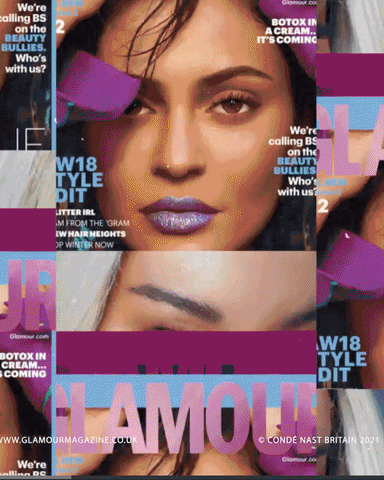

Welcome to "Article" section! We provide daily updates on topics from science and technology to health and dancing, giving you the most up-to-date insights from a wide range of experts.
Subscribe today and stay ahead of the curve!

Zere Amangeldinova
"At the age of 25, the young doctor already has a lot of experience
behind her, which she talks about,
while fussing in front of me, pouring me a cup
of fruit tea. Sabina Salikova is not so easy
to catch for leisure, as soon as she was
an eighteen-year-old girl crossed the threshold
of a medical school: her life changed.
Sabina Salikova is a vivid example of the fact that she loves her
profession and balancing her personal life is
possible."
Info! To read whole interview, please follow the link below
"The best way to find your vocation is to constantly try something new, explore the unknown, reveal your versatility and develop.
Intellectual and spiritual states of a person are also developing thanks to sports.
Dilara Kurilova is a vivid example of this, a student of M.S. Narikbayev KAZGUU of the Higher Humanitarian School talks about her studies, work and her passion for sports."
Info! To read whole interview, please follow the link below
"Story of an inspirational young girl who is using dance to overcome her hardships.
Despite facing numerous struggles and obstacles in life, this brave and determined teenager has embraced dancing as her way of creating a better future for herself.
This article delves into the lives of individuals who use art to thrive in difficult times and inspire the next generation of performers."
Info! To read whole interview, please follow the link below
"Photography is an art that can hold a moment of eternity in one frame.
Each photo carries a unique message that can evoke certain emotions and feelings.
Assan Kaissar, first-year student of speciality Media Technologies in Astana IT University,
talks about his first steps in the world of photography and how it influenced his life."
Info! To read whole interview, please follow the link below

.png)
.png)
.png)
.png)
.png)

.png)